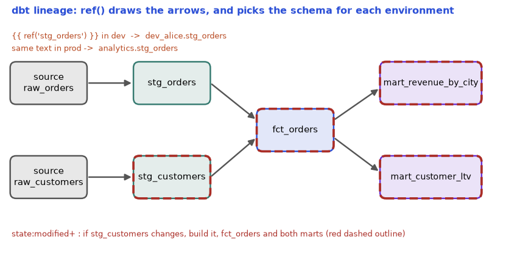

In Chapter 1 you met ELT: load raw data into the warehouse first, then transform it there with SQL. The question that follows is practical. Who runs the 80 SQL files in the right order? Who tests them? Who remembers that mart_city_revenue depends on fct_orders, which depends on two staging tables? Without a tool, the answer is "a person with a spreadsheet and bad luck". dbt (data build tool) is the tool that solves this. You write plain SELECT statements, and dbt works out the order, builds the tables or views, runs tests, and writes documentation. In this chapter you will understand dbt by building a tiny dbt-like program yourself (it runs here), then read real dbt project files, and finally learn the habits a dbt team uses in code review and CI. The SQL itself is covered in the separate SQL study document (study/sql/); here we focus on the engineering around the SQL.
Honest note: dbt is not installed here and cannot be downloaded in this sandbox. All dbt files and commands are labelled not run here. The mini build script and the SQL tests are real Python and SQLite and were run. Details such as YAML key names change between dbt versions, so check the docs of the version you use.
Running example: ShopKart again. Raw tables raw_orders (amounts in paise, 1 rupee = 100 paise) and raw_customers are already loaded by the pipelines of Chapter 4. We want a trusted fct_orders and a mart_city_revenue.
source() refers to raw tables, ref() links one model to another and builds the dependency graph, and a materialization decides how a model is stored (view, table, incremental).ref() is that "take it from recipe 4" sentence, and the order of cooking comes for free.| Word | Plain meaning | ShopKart example |
|---|---|---|
| Model | One .sql file holding one SELECT. dbt turns it into a table or view with the file's name | fct_orders.sql becomes table fct_orders |
| Source | A raw table that someone else loads; you declare it in YAML so dbt knows it exists | raw_orders |
ref('x') | "Use model x here." dbt replaces it with the real table name and records the dependency | {{ ref('stg_orders') }} |
source('s','t') | The same idea for a raw table | {{ source('shop','raw_orders') }} |
| Materialization | How dbt stores the model result: view, table, incremental, ephemeral | fct_orders as table |
| Jinja | A small templating language. {{ ... }} prints a value, {% ... %} runs logic | {{ ref('x') }} |
| DAG | The dependency graph (Chapter 6). dbt builds it from the ref() calls | staging to fact to mart |
The common convention (from the dbt community, not a hard rule) has three layers. It matches the bronze/silver/gold idea from Chapter 1.
| Layer | Job | Prefix | Materialization (typical) |
|---|---|---|---|
| Staging | One model per source table; rename columns, fix types, convert units. No joins | stg_ | view |
| Intermediate | Joins and reshaping that several marts need | int_ | ephemeral or view |
| Marts | Business-ready facts and dimensions (Chapter 2) | fct_, dim_, mart_ | table or incremental |
A dbt project is just a folder of text files:
shopkart_dbt/
dbt_project.yml project name, folder settings, default materializations
profiles.yml connection to the warehouse (kept OUT of git: it holds secrets)
models/
staging/
_sources.yml declares raw tables, tests on them, freshness
stg_orders.sql
stg_customers.sql
marts/
fct_orders.sql
mart_city_revenue.sql
_models.yml descriptions and tests for the models
seeds/country_codes.csv small CSV files that dbt loads as tables
snapshots/ history tracking (SCD2), see 7.2
macros/ reusable Jinja functions, see 7.3
tests/ custom SQL tests, see 7.3models/staging/_sources.yml (not run here):
version: 2
sources:
- name: shop
database: raw
schema: ingest
tables:
- name: raw_orders
loaded_at_field: _loaded_at
freshness:
warn_after: {count: 12, period: hour}
error_after: {count: 24, period: hour}
- name: raw_customersmodels/staging/stg_orders.sql (not run here):
select
order_id,
customer_id,
amount_paise / 100.0 as amount_rupees,
updated_at
from {{ source('shop', 'raw_orders') }}models/marts/fct_orders.sql (not run here):
{{ config(materialized='table') }}
select o.order_id, o.amount_rupees, c.city
from {{ ref('stg_orders') }} o
join {{ ref('stg_customers') }} c using (customer_id)Commands you will type (not run here): dbt run builds all models; dbt run --select fct_orders+ builds that model and everything downstream (the + after the name); +fct_orders means everything upstream; dbt build runs models, tests, seeds and snapshots together in DAG order; dbt compile shows the final SQL without running it.
To understand what ref() really does, we build the same idea ourselves. Before you run it, predict: in what order will the four models be built, and what will ref be replaced with?
import re, sqlite3, graphlib
models={
"stg_orders":"SELECT order_id, customer_id, amount/100.0 AS amount FROM raw_orders",
"stg_customers":"SELECT id AS customer_id, UPPER(city) AS city FROM raw_customers",
"fct_orders":"SELECT o.order_id, o.amount, c.city FROM {{ ref('stg_orders') }} o JOIN {{ ref('stg_customers') }} c USING(customer_id)",
"mart_city_revenue":"SELECT city, SUM(amount) AS revenue FROM {{ ref('fct_orders') }} GROUP BY city",
}
db=sqlite3.connect(":memory:")
db.executescript("""CREATE TABLE raw_orders(order_id,customer_id,amount);INSERT INTO raw_orders VALUES(1,1,25000),(2,1,5000),(3,2,12000);
CREATE TABLE raw_customers(id,city);INSERT INTO raw_customers VALUES(1,'pune'),(2,'delhi');""")
deps={m:set(re.findall(r"ref\('(\w+)'\)",s)) for m,s in models.items()}
for m in graphlib.TopologicalSorter(deps).static_order():
sql=re.sub(r"\{\{ ref\('(\w+)'\) \}\}",r"\1",models[m])
db.execute(f"CREATE VIEW {m} AS {sql}"); print("built",m)
print(db.execute("SELECT * FROM mart_city_revenue ORDER BY city").fetchall())
print("test not_null(fct_orders.city) bad rows:",db.execute("SELECT COUNT(*) FROM fct_orders WHERE city IS NULL").fetchone()[0])Real output:
built stg_orders
built stg_customers
built fct_orders
built mart_city_revenue
[('DELHI', 120.0), ('PUNE', 300.0)]
test not_null(fct_orders.city) bad rows: 0Line by line:
models is a dictionary of model name to SQL text. In dbt this is "a folder of .sql files".deps uses a regular expression to find every ref('...') in each SQL text. This is exactly how dbt learns the graph: it reads your SQL, so you never write the order by hand.graphlib.TopologicalSorter(deps).static_order() is the same topological sort as the toy scheduler in Chapter 6. A model appears only after everything it refers to.re.sub(...) replaces {{ ref('x') }} by the plain name x. Real dbt replaces it with the full name, such as analytics.dev_asha.stg_orders, and that is why the same code works in a developer's private schema and in production.CREATE VIEW is the view materialization. Real dbt can also create a table.Check by hand: Asha (customer 1, Pune) has orders of 25000 and 5000 paise = 250 + 50 = 300 rupees. Ravi (Delhi) has 12000 paise = 120 rupees. The output matches.
Problem 7.1.1 fct_orders refers to stg_orders and stg_customers. mart_city_revenue refers to fct_orders. A teammate runs dbt run --select stg_orders+. Which models are built?
| Step 1 | The + after a name means "this model and everything downstream of it". |
|---|---|
| Step 2 | Downstream of stg_orders is fct_orders (it refers to it), and downstream of fct_orders is mart_city_revenue. |
| Step 3 | stg_customers is a sibling input, not downstream, so it is not selected. |
| Answer | stg_orders, fct_orders, mart_city_revenue, in that order. |
| Check | In our toy, the topological order printed earlier shows these three in the same relative order. |
| Why it matters | After you change one staging model you rebuild only what can be affected. On a 500-model project this saves hours. |
| Type | What dbt creates | Good when | Bad when |
|---|---|---|---|
view | A saved query. Nothing stored | Light models, small data, staging | Many people query it: it recomputes each time |
table | Full rebuild into a physical table on each run | Medium data, dashboards need speed | Data is huge: rebuild is slow and costly |
incremental | Adds or updates only new rows (7.2) | Large, append-heavy facts | Logic that must change old rows often |
ephemeral | No object at all; inlined as a CTE (a named sub-query) into the models that use it | Tiny helper logic | You want to debug it or query it alone |
materialized_view | The warehouse keeps it fresh itself (support depends on the adapter) | Simple aggregates with frequent reads | Complex SQL the warehouse cannot maintain |
Set defaults in dbt_project.yml (not run here):
models:
shopkart:
staging:
+materialized: view
marts:
+materialized: tableIn job ads, "analytics engineer" and "dbt experience" mean exactly this section: organising SQL into layers, using ref(), and choosing materializations to balance speed and cost (Chapter 8).
table "to be safe". A 2-billion-row fact rebuilt every hour wastes warehouse money. Start with views for staging, tables for small marts, and incremental for big facts.Check yourself
ref('x') give you besides the table name? Answer: the dependency arrow in the DAG, so dbt builds x first.ephemeral.profiles.yml kept out of git? Answer: it holds warehouse credentials.You know the watermark from Chapter 4 (4.1): remember the largest updated_at already loaded and fetch only newer rows. dbt's incremental materialization is the same idea inside the warehouse.
models/marts/fct_orders.sql as incremental (not run here):
{{ config(materialized='incremental', unique_key='order_id') }}
select order_id, customer_id, amount_rupees, updated_at
from {{ ref('stg_orders') }}
{% if is_incremental() %}
where updated_at > (select max(updated_at) from {{ this }})
{% endif %}is_incremental() is true only when the table already exists and you did not pass --full-refresh. On the first run the where is skipped, so everything loads.{{ this }} means "the table this model builds", so the model can read its own current state.unique_key='order_id' tells dbt how to update existing rows (a merge or delete-and-insert, depending on the adapter's incremental strategy). Without a unique key, dbt can only append, and updated rows would appear twice.append, merge, delete+insert, insert_overwrite (partition replace). Which ones exist depends on the warehouse adapter.dbt run --full-refresh drops and rebuilds from scratch. It is your repair tool.Our toy does the same with INSERT OR REPLACE (SQLite's "upsert by primary key"). Predict: after run 2, how many rows, and what is the amount of order 1? Then a late row arrives with an old updated_at. Will the watermark catch it?
import sqlite3
db=sqlite3.connect(":memory:")
db.executescript("""
CREATE TABLE raw_orders(order_id INT, customer_id INT, amount_paise INT, updated_at TEXT);
INSERT INTO raw_orders VALUES (1,1,25000,'2024-06-01'),(2,1,5000,'2024-06-01'),(3,2,12000,'2024-06-02');
CREATE TABLE fct_orders(order_id INT PRIMARY KEY, customer_id INT, amount REAL, updated_at TEXT);
""")
def run_incremental(full_refresh=False):
if full_refresh: db.execute("DELETE FROM fct_orders")
wm=db.execute("SELECT COALESCE(MAX(updated_at),'1900-01-01') FROM fct_orders").fetchone()[0]
db.execute("""INSERT OR REPLACE INTO fct_orders
SELECT order_id, customer_id, amount_paise/100.0, updated_at FROM raw_orders WHERE updated_at > ?""",(wm,))
return wm
print("run 1 watermark:",run_incremental(), "rows:",db.execute("SELECT COUNT(*) FROM fct_orders").fetchone()[0])
db.execute("INSERT INTO raw_orders VALUES (4,3,8000,'2024-06-03')")
db.execute("UPDATE raw_orders SET amount_paise=30000, updated_at='2024-06-03' WHERE order_id=1")
print("run 2 watermark:",run_incremental(), "rows:",db.execute("SELECT COUNT(*) FROM fct_orders").fetchone()[0])
print(db.execute("SELECT * FROM fct_orders ORDER BY order_id").fetchall())
print("run 3 (nothing new) watermark:",run_incremental(),"rows:",db.execute("SELECT COUNT(*) FROM fct_orders").fetchone()[0])
db.execute("INSERT INTO raw_orders VALUES (5,2,9900,'2024-06-01')")
run_incremental(); print("late row 5 loaded?",db.execute("SELECT COUNT(*) FROM fct_orders WHERE order_id=5").fetchone()[0]==1)
run_incremental(full_refresh=True); print("after full refresh, loaded?",db.execute("SELECT COUNT(*) FROM fct_orders WHERE order_id=5").fetchone()[0]==1)Real output:
run 1 watermark: 1900-01-01 rows: 3
run 2 watermark: 2024-06-02 rows: 4
[(1, 1, 300.0, '2024-06-03'), (2, 1, 50.0, '2024-06-01'), (3, 2, 120.0, '2024-06-02'), (4, 3, 80.0, '2024-06-03')]
run 3 (nothing new) watermark: 2024-06-03 rows: 4
late row 5 loaded? False
after full refresh, loaded? TrueExplanation:
1900-01-01 and all 3 rows load. This is the "first run" branch.2024-06-02 (the biggest date loaded). Only order 4 (new) and order 1 (updated to 3 June) pass updated_at > watermark. Order 1 replaces its old row because it has the same primary key (our unique_key). So we have 4 rows, and order 1 shows 300.0 rupees (30000 paise).2024-06-03 and no raw row is newer, so nothing changes. Running it again is safe: this is idempotent (Chapter 6).updated_at = 2024-06-01, older than the watermark. The filter > skips it forever. Only a full refresh (or a lookback window) repairs it.updated_at is only correct if the source always stamps a new, increasing time on every change and every arrival. Late-arriving rows (Chapter 4, 4.3) break it. The usual fix is a lookback window: use updated_at > max(updated_at) - interval '3 days' together with a unique_key, so reprocessed rows replace themselves instead of duplicating.Problem 7.2.1 Order 1 is changed on 5 June, and the incremental model has unique_key='order_id', merge strategy. The table holds order 1 with amount 300. The new amount is 350. How many rows for order 1 after the run, and what amount?
| Step 1 | The row is newer than the watermark, so it is selected. |
|---|---|
| Step 2 | Merge compares on order_id: a match exists, so it updates instead of inserting. |
| Answer | One row, amount 350. |
| Check | Without unique_key (append only) there would be two rows (300 and 350), and SUM(amount) would be inflated by 300. |
| Why it matters | Duplicate rows from a missing unique key is the most common incremental bug. |
Chapter 2 taught SCD Type 2 (keep every version of a dimension row with valid_from and valid_to). A dbt snapshot automates it. There are two strategies. The timestamp strategy compares an updated_at column. The check strategy compares the values of chosen columns. dbt adds the columns dbt_valid_from and dbt_valid_to; the current row has dbt_valid_to empty (null). Older dbt versions use a {% snapshot %} Jinja block; newer versions also allow a YAML definition. Check your version. Example (not run here):
{% snapshot snap_customers %}
{{ config(
target_schema='snapshots',
unique_key='customer_id',
strategy='check',
check_cols=['tier']
) }}
select customer_id, tier from {{ source('shop', 'raw_customers') }}
{% endsnapshot %}You run dbt snapshot on a schedule. A snapshot only records changes it sees. If a customer changes tier twice between two runs, you only see the final value.
Our toy of the check strategy (real, run here; the SQL closes the old row and opens a new one when tier differs):
(1, 'silver', '2024-06-01', '2024-06-10')
(1, 'gold', '2024-06-10', None)
(2, 'gold', '2024-06-01', None)Reading it: customer 1 was silver from 1 June until 10 June, then gold from 10 June (open, None means "still current"). Customer 2 never changed. We ran the snapshot a third time on 11 June with no change and no new rows appeared: the snapshot is idempotent.
Problem 7.2.3 An analyst joins orders to snap_customers to get the tier at the time of the order. Order 3 was placed on 2024-06-05 by customer 1. Which row matches?
| Step 1 | Join condition: order_date >= valid_from and (order_date < valid_to or valid_to is null). |
|---|---|
| Step 2 | Row 1: valid 06-01 to 06-10. 06-05 is inside this range. Row 2 starts 06-10, so no. |
| Answer | Tier silver. |
| Check | An order on 2024-06-12 would match the open row (gold). |
| Why it matters | "Revenue by tier as it was" needs history. Joining to the current tier rewrites the past. |
Seeds are small CSV files in seeds/ that dbt seed loads as tables (country codes, status mappings). Large or changing data belongs in a source instead.
is_incremental() as safe forever. Over months, late rows and logic changes leave the table slightly wrong. Schedule a weekly or monthly --full-refresh, and compare row counts with the source.Check yourself
unique_key (with a merge or delete+insert strategy).dbt_valid_to empty mean? Answer: the row is the current version.updated_at was older than the stored maximum.Chapter 5 introduced data-quality checks. dbt has two kinds:
unique, not_null, accepted_values, relationships (a foreign-key check)..sql file in tests/ that returns the failing rows. If it returns zero rows, it passes.models/marts/_models.yml (not run here):
version: 2
models:
- name: fct_orders
description: "One row per order. Amount in rupees."
columns:
- name: order_id
data_tests: # older dbt versions use the key "tests:"
- unique
- not_null
- name: customer_id
data_tests:
- relationships:
to: ref('dim_customers')
field: customer_id
- name: status
data_tests:
- accepted_values:
values: ['placed', 'shipped', 'cancelled']A singular test tests/no_negative_amounts.sql (not run here):
select order_id, amount_rupees from {{ ref('fct_orders') }} where amount_rupees < 0The tests are just queries. Our SQLite version of four generic tests on a table where we planted two defects (a row with null customer_id, and an order whose customer 3 is missing from the customer table). Real output:
FAIL not_null(fct_orders.customer_id) failing rows: 1
PASS unique(fct_orders.order_id) failing rows: 0
FAIL relationships(fct_orders.customer_id->raw_customers) failing rows: 1
PASS accepted_values(snap.tier) failing rows: 0Reading it: not_null finds the planted null. relationships finds order 4, whose customer 3 does not exist in raw_customers (an orphan key). unique and accepted_values pass. Note relationships ignores null keys (we filtered them with IS NOT NULL), so a null is reported once, by not_null.
Test severity: a test can be warn or error; dbt build stops downstream models when an upstream test fails, which prevents bad data from spreading into marts.
Problem 7.3.1 A model dim_product has 1,200 rows and product_id has 3 duplicated values (each appears twice). What does the unique test report, and what is the row count of distinct ids?
| Step 1 | Test query: select product_id from dim_product group by product_id having count(*) > 1. |
|---|---|
| Step 2 | Three ids appear twice, so 3 rows come back. |
| Step 3 | Rows involved: 1,200 total. The 3 duplicates account for 3 extra rows, so distinct ids = 1,200 − 3 = 1,197. |
| Answer | The test fails with 3 failing rows; there are 1,197 distinct products. |
| Check | 1,197 + 3 = 1,200. |
| Why it matters | A duplicate dimension key silently multiplies fact rows in joins (fan-out, Chapter 2). This is why unique on every primary key is the first test to add. |
A macro is a reusable Jinja function. macros/cents_to_rupees.sql (not run here):
{% macro paise_to_rupees(column_name) %}
({{ column_name }} / 100.0)
{% endmacro %}Used as select {{ paise_to_rupees('amount_paise') }} as amount_rupees from .... dbt first renders Jinja into plain SQL (you can see it with dbt compile), then sends the SQL to the warehouse. Jinja runs in dbt, before the warehouse, and never sees your data. That is why a Jinja if cannot depend on a column value, only on things known at compile time (such as the target environment).
Packages are shared dbt projects. You list them in packages.yml (for example dbt_utils, which has tests and macros such as generate_surrogate_key) and run dbt deps. Package names and versions change; check the dbt package hub.
CI for dbt means: on every pull request, build and test the changed models in a temporary schema, and block the merge if anything fails. Rebuilding all 500 models on each pull request is slow and costly. A slim build builds only what changed and what is downstream, and reads unchanged upstream models from production (defer). Command (not run here):
dbt build --select state:modified+ --defer --state ./prod_artifactsstate:modified+ means "changed models and everything downstream". --state points to the saved manifest.json from the last production run. --defer says "if an upstream model was not rebuilt, use the production copy".
A typical team flow: branch in git, change SQL, push, CI runs dbt build slim on a PR schema, a colleague reviews, merge, then a scheduled production job runs dbt build (often from Airflow, Chapter 6, or dbt Cloud).
| Item | What it is |
|---|---|
| dbt Core | The open-source command-line tool you run yourself (laptop, container, Airflow worker) |
| dbt Cloud | A paid hosted product: scheduler, IDE, CI, docs hosting |
| Semantic layer | You define metrics (such as revenue = sum(amount)) once in YAML; BI tools ask the layer for "revenue by city" and get one definition everywhere |
Not everything is SQL. A short decision guide:
| Data size | Tool | Reason |
|---|---|---|
| Up to a few GB, one machine | pandas, Polars or DuckDB | No cluster; DuckDB runs SQL on files directly (Chapter 3) |
| Tens of GB, one big machine | Polars or DuckDB | Faster and more memory-friendly than pandas |
| Hundreds of GB to TB, in the warehouse | SQL via dbt | Warehouse scales the compute |
| Large files in a lake, complex logic | Spark (Chapters 9 and 10) | Distributes across a cluster |
Some dbt adapters also support Python models, which run on the platform's Spark or Snowpark engine. Not run here.
dbt docs generate and dbt docs serve build a website with the lineage graph. An exposure in YAML declares a consumer (such as a dashboard) so you see who a change affects.
warn. A test nobody reads is decoration. Put unique and not_null on every primary key, relationships on every foreign key, and make the important ones error.Check yourself
--defer do? Answer: reads unchanged upstream models from the production state instead of rebuilding them.if check the value of a data row? Answer: no, Jinja runs at compile time before the warehouse sees any data.Section 7.2 showed one incremental model. Here we put the three classic strategies side by side on one dataset, so you can see exactly where they differ. A strategy is set in dbt with incremental_strategy; which ones are available depends on the warehouse adapter (check the adapter's documentation). In dbt 1.9 and later there is also a microbatch strategy that splits a large time-based model into one batch per day or hour, based on an event_time column, and lets you retry or backfill a single batch. We do not run it here (dbt is not installed), but its idea is the same as the partition overwrite of Chapter 6.
The dataset: on day 1 the source holds orders 1 to 3. Between runs, order 2 changes from 200 to 250, orders 4 and 5 arrive, and order 6 arrives late, stamped 2024-06-02, which is before the newest date already loaded. The incremental filter is the familiar updated_at > max(updated_at) in the target. Before you run it: which strategy gives duplicates? Which one loses order 6?
import sqlite3
def run(strategy, lookback_days=0):
db = sqlite3.connect(":memory:")
db.executescript("""
CREATE TABLE src(order_id INT, amount INT, updated_at TEXT);
CREATE TABLE tgt(order_id INT, amount INT, updated_at TEXT);
CREATE UNIQUE INDEX u ON tgt(order_id);
""" if strategy == "merge" else """
CREATE TABLE src(order_id INT, amount INT, updated_at TEXT);
CREATE TABLE tgt(order_id INT, amount INT, updated_at TEXT);
""")
def incremental_run():
db.execute("DROP TABLE IF EXISTS batch")
db.execute(f"""CREATE TEMP TABLE batch AS SELECT * FROM src WHERE updated_at >
date(COALESCE((SELECT MAX(updated_at) FROM tgt), '1900-01-01'), '-{lookback_days} day')""")
if strategy == "append":
db.execute("INSERT INTO tgt SELECT * FROM batch")
elif strategy == "delete+insert":
db.execute("DELETE FROM tgt WHERE order_id IN (SELECT order_id FROM batch)")
db.execute("INSERT INTO tgt SELECT * FROM batch")
else: # merge (an upsert on the unique key)
db.execute("""INSERT INTO tgt SELECT * FROM batch WHERE true
ON CONFLICT(order_id) DO UPDATE
SET amount = excluded.amount, updated_at = excluded.updated_at""")
db.executemany("INSERT INTO src VALUES (?,?,?)", [(1, 100, "2024-06-01"), (2, 200, "2024-06-01"), (3, 300, "2024-06-02")])
incremental_run() # run 1
db.execute("UPDATE src SET amount = 250, updated_at = '2024-06-03' WHERE order_id = 2")
db.executemany("INSERT INTO src VALUES (?,?,?)", [(4, 400, "2024-06-03"), (5, 500, "2024-06-03"),
(6, 600, "2024-06-02")]) # order 6 landed late
incremental_run() # run 2
return db.execute("SELECT order_id, amount FROM tgt ORDER BY order_id, amount").fetchall()
for s in ["append", "delete+insert", "merge"]:
r = run(s)
print(f"{s:14s} lookback 0: {len(r)} rows", r)
r = run("merge", 1); print(f"{'merge':14s} lookback 1: {len(r)} rows", r)
r = run("append", 1); print(f"{'append':14s} lookback 1: {len(r)} rows", r)append lookback 0: 6 rows [(1, 100), (2, 200), (2, 250), (3, 300), (4, 400), (5, 500)]
delete+insert lookback 0: 5 rows [(1, 100), (2, 250), (3, 300), (4, 400), (5, 500)]
merge lookback 0: 5 rows [(1, 100), (2, 250), (3, 300), (4, 400), (5, 500)]
merge lookback 1: 6 rows [(1, 100), (2, 250), (3, 300), (4, 400), (5, 500), (6, 600)]
append lookback 1: 8 rows [(1, 100), (2, 200), (2, 250), (3, 300), (3, 300), (4, 400), (5, 500), (6, 600)]Explain, line by line.
updated_at in the target is 06-02. The filter keeps only rows with a newer stamp, and order 6 is stamped 06-02, not newer. Late-arriving data falls through the gap between "the watermark moved" and "the row landed".append model. You trade missing rows for duplicate rows. Pair a lookback with merge or delete+insert on a real unique_key, and add a unique test on that key so a duplicate fails the build.| Strategy | Handles updates? | Cost | Use when |
|---|---|---|---|
| append | No | Cheapest: writes only the new rows | immutable events (clicks, logs) |
| delete+insert | Yes, by key | Deletes and rewrites matched rows | no merge support, or a whole-partition refresh |
| merge | Yes, by key | Scans the target to match keys unless it is clustered or partitioned on the key | row-level updates of a dimension or fact |
| insert_overwrite | Yes, by partition | Rewrites whole partitions, no key lookup | large daily partitions where a day is reloaded wholesale |
| microbatch | Yes, by time batch | One query per batch, retryable | very large time-series models |
Problem 7.4.1 A model has 2,000,000,000 rows in the target. Each day, 4,000,000 rows arrive and 1% of them (40,000) update existing orders spread randomly over history. Compare how many target rows each strategy must touch (read or rewrite) in the best case, ignoring clustering.
| Append | Touches only the 4,000,000 new rows, but leaves 40,000 stale duplicates every day (about 14.6 million wrong rows a year). |
|---|---|
| Merge | Must match 4,000,000 keys against the target. With no clustering on the key that may scan a large part of 2 billion rows; with clustering on the key, only the few files holding the 40,000 updated keys plus the inserts are rewritten. |
| Insert overwrite (daily partition) | Not suitable: the 40,000 updates are spread over history, so many partitions would be rewritten. It suits "reload the last 3 days" patterns. |
| Answer | For this update pattern, merge (or delete+insert) with a clustered key. Append is cheap but wrong, overwrite is cheap only if updates are recent. |
| Check | 40,000 × 365 = 14,600,000 duplicates a year under append. |
Section 7.2 gave the idea. Now watch a snapshot work, run by run, for both strategies, on one source table of customers. Strategy timestamp uses the source's updated_at as the clock and notices a change when that stamp is newer than the stored row. Strategy check notices a change only when a watched column (here tier) differs, and uses the day the snapshot ran as the clock. Before you run it: on run 3 we only touch customer 2 (new updated_at, same tier). Which strategy creates a new history row?
import sqlite3
def make(strategy):
db = sqlite3.connect(":memory:")
db.executescript("""
CREATE TABLE src(customer_id INT, tier TEXT, updated_at TEXT);
CREATE TABLE snap(customer_id INT, tier TEXT, valid_from TEXT, valid_to TEXT);
""")
def snapshot(run_date):
for cid, tier, upd in db.execute("SELECT * FROM src").fetchall():
cur = db.execute("SELECT tier, valid_from FROM snap WHERE customer_id=? AND valid_to IS NULL", (cid,)).fetchone()
stamp = upd if strategy == "timestamp" else run_date
changed = cur is None or (upd > cur[1] if strategy == "timestamp" else tier != cur[0])
if cur is not None and changed:
db.execute("UPDATE snap SET valid_to=? WHERE customer_id=? AND valid_to IS NULL", (stamp, cid))
if changed:
db.execute("INSERT INTO snap VALUES (?,?,?,NULL)", (cid, tier, stamp))
return db, snapshot
def show(db, title):
print(title)
for r in db.execute("SELECT * FROM snap ORDER BY customer_id, valid_from"): print(" ", r)
for strategy in ["timestamp", "check"]:
db, snapshot = make(strategy)
db.executemany("INSERT INTO src VALUES (?,?,?)", [(1, "silver", "2024-05-20"), (2, "gold", "2024-05-25")])
snapshot("2024-06-01"); show(db, f"[{strategy}] after run 1 (06-01)")
db.execute("UPDATE src SET tier='gold', updated_at='2024-06-09' WHERE customer_id=1")
db.execute("INSERT INTO src VALUES (3,'silver','2024-06-08')")
snapshot("2024-06-10"); show(db, f"[{strategy}] after run 2 (06-10)")
db.execute("UPDATE src SET updated_at='2024-06-14' WHERE customer_id=2") # touched, tier unchanged
snapshot("2024-06-15"); show(db, f"[{strategy}] after run 3 (06-15), customer 2 touched, tier unchanged")[timestamp] after run 1 (06-01)
(1, 'silver', '2024-05-20', None)
(2, 'gold', '2024-05-25', None)
[timestamp] after run 2 (06-10)
(1, 'silver', '2024-05-20', '2024-06-09')
(1, 'gold', '2024-06-09', None)
(2, 'gold', '2024-05-25', None)
(3, 'silver', '2024-06-08', None)
[timestamp] after run 3 (06-15), customer 2 touched, tier unchanged
(1, 'silver', '2024-05-20', '2024-06-09')
(1, 'gold', '2024-06-09', None)
(2, 'gold', '2024-05-25', '2024-06-14')
(2, 'gold', '2024-06-14', None)
(3, 'silver', '2024-06-08', None)
[check] after run 1 (06-01)
(1, 'silver', '2024-06-01', None)
(2, 'gold', '2024-06-01', None)
[check] after run 2 (06-10)
(1, 'silver', '2024-06-01', '2024-06-10')
(1, 'gold', '2024-06-10', None)
(2, 'gold', '2024-06-01', None)
(3, 'silver', '2024-06-10', None)
[check] after run 3 (06-15), customer 2 touched, tier unchanged
(1, 'silver', '2024-06-01', '2024-06-10')
(1, 'gold', '2024-06-10', None)
(2, 'gold', '2024-06-01', None)
(3, 'silver', '2024-06-10', None)Explain, run by run.
valid_to empty, shown as None). With timestamp, valid_from is the source stamp (05-20 and 05-25). With check, it is the run date (06-01), the first day we saw the row.valid_to set) and a new open row is added. Under timestamp the boundary is the true change time, 06-09; under check it is only the day we noticed, 06-10. Customer 3 is new. This is the main trade-off: timestamp gives accurate boundaries but needs a trustworthy updated_at; check works without one but its dates are as late as your snapshot schedule.timestamp snapshot sees a newer stamp and closes and reopens the row although the tier is the same: a useless extra version. The check snapshot compares only tier and adds nothing.timestamp when the source has a reliable updated_at that changes only on real edits, and check on the exact columns you care about when it does not. If rows can be deleted in the source, look at the snapshot option that closes rows for hard deletes. Newer dbt versions (1.9 and later) let you declare snapshots in YAML instead of the {% snapshot %} block; the strategies are the same.Problem 7.5.1 Using the check snapshot above, a customer was silver on 06-01 (first run), became gold on 06-03, became platinum on 06-05, and the snapshot runs only on 06-10. What does the snapshot hold?
| Setup | The snapshot sees only the state at each run: silver on 06-01, platinum on 06-10. |
|---|---|
| Compute | Rows: (silver, 06-01 to 06-10) and (platinum, 06-10 to open). |
| Answer | Gold is never recorded, and platinum is dated 06-10 although it began 06-05. A snapshot cannot recover changes it did not see. |
| Check | An order on 06-04 would join to silver, but the customer was gold then. To avoid this, run snapshots at least as often as the source changes, or capture changes with CDC (Chapter 4). |

ref() is one arrow. The dashed red outline marks what state:modified+ selects if only stg_customers changed.How to read it: data flows left to right. Every arrow exists because one model wrote {{ ref('...') }} or {{ source('...') }} to another. In your own schema, ref('stg_orders') becomes something like dev_alice.stg_orders; in production the same text becomes analytics.stg_orders. The dashed models are the ones that must be rebuilt when stg_customers changes: itself and everything downstream, but not stg_orders.
Jinja is a small template language. {% for %} repeats text, {% if %} chooses text, and {{ }} inserts a value. dbt renders the Jinja first and sends plain SQL to the warehouse (Section 7.3). The macro below builds one column per payment method, so that adding a method means changing a list, not copying a line. We render it with the real jinja2 library and run the result in SQLite. (In dbt the macro would be declared with {% macro %} in the macros/ folder and called by name; here we render the body directly.)
import sqlite3
from jinja2 import Template
tpl = Template("""SELECT order_id,
{%- for m in methods %}
SUM(CASE WHEN method = '{{ m }}' THEN amount ELSE 0 END) AS {{ m }}_amount{{ "," if not loop.last }}
{%- endfor %}
FROM payments
{%- if target == "dev" %}
WHERE order_id <= 2 -- dev: only a small sample
{%- endif %}
GROUP BY order_id ORDER BY order_id""")
db = sqlite3.connect(":memory:")
db.executescript("""CREATE TABLE payments(order_id INT, method TEXT, amount INT);
INSERT INTO payments VALUES (1,'card',100),(1,'upi',50),(2,'upi',200),(3,'card',300),(3,'cod',75);""")
for target in ["dev", "prod"]:
sql = tpl.render(methods=["card", "upi", "cod"], target=target)
print(f"--- target={target} ---")
if target == "dev": print(sql)
print(db.execute(sql).fetchall())--- target=dev ---
SELECT order_id,
SUM(CASE WHEN method = 'card' THEN amount ELSE 0 END) AS card_amount,
SUM(CASE WHEN method = 'upi' THEN amount ELSE 0 END) AS upi_amount,
SUM(CASE WHEN method = 'cod' THEN amount ELSE 0 END) AS cod_amount
FROM payments
WHERE order_id <= 2 -- dev: only a small sample
GROUP BY order_id ORDER BY order_id
[(1, 100, 50, 0), (2, 0, 200, 0)]
--- target=prod ---
[(1, 100, 50, 0), (2, 0, 200, 0), (3, 300, 0, 75)]Explain. For dev the template adds the sample filter (an if on a value known at compile time) and the loop writes three SUM(CASE ...) columns, with the comma printed after every column except the last (loop.last is true only on the final pass). For prod the filter is gone and all three orders appear. Check order 1 by hand: card 100, upi 50, cod 0, which is the first row of the prod result. The condition cannot depend on a value inside a row, only on things known when the SQL is built (Section 7.3).
A generic test is a test written once with parameters and then attached to any column in YAML. A test is a query that returns the failing rows; zero rows means pass. dbt declares it with a {% test %} block (not run here):
-- tests/generic/positive_amount.sql (not run here: needs dbt)
{% test positive_amount(model, column_name) %}
select * from {{ model }} where {{ column_name }} <= 0 or {{ column_name }} is null
{% endtest %}
# models/schema.yml
models:
- name: stg_orders
columns:
- name: amount
tests: [positive_amount]The rendered SQL is plain SQL, so we can check what it would return on a small table:
import sqlite3
from jinja2 import Template
test_sql = Template("select * from {{ model }} where {{ column_name }} <= 0 or {{ column_name }} is null")
db = sqlite3.connect(":memory:")
db.executescript("CREATE TABLE stg_orders(order_id INT, amount INT); INSERT INTO stg_orders VALUES (1,100),(2,0),(3,-5),(4,NULL),(5,40);")
sql = test_sql.render(model="stg_orders", column_name="amount")
print(sql)
failures = db.execute(sql).fetchall()
print("failing rows:", failures)
print("test result:", "PASS" if not failures else f"FAIL ({len(failures)} rows)")select * from stg_orders where amount <= 0 or amount is null
failing rows: [(2, 0), (3, -5), (4, None)]
test result: FAIL (3 rows)Explain. Rows 2 (zero), 3 (negative) and 4 (null) fail; rows 1 and 5 pass. Note the explicit is null: a comparison with null is neither true nor false in SQL, so amount <= 0 alone would let the null row slip through.
The --select flag chooses nodes in the graph. A plus sign adds the model's relatives: fct_orders+ is fct_orders and everything downstream; +fct_orders is it and everything upstream; +fct_orders+ is both; tag:daily selects by tag; --exclude removes nodes. With state:modified dbt compares your code with a saved manifest.json and selects the models whose definition changed. We can reproduce the selection logic on the graph in the figure:
parents = {"stg_orders": [], "stg_customers": [], "fct_orders": ["stg_orders", "stg_customers"],
"mart_revenue_by_city": ["fct_orders"], "mart_customer_ltv": ["fct_orders"]}
def descendants(node):
out = set()
for m, ps in parents.items():
if node in ps:
out |= {m} | descendants(m)
return out
def ancestors(node):
out = set()
for p in parents[node]:
out |= {p} | ancestors(p)
return out
modified = {"stg_customers"}
plus = set(modified)
for m in modified: plus |= descendants(m)
print("state:modified+ ->", sorted(plus))
print("fct_orders+ ->", sorted({"fct_orders"} | descendants("fct_orders")))
print("+mart_customer_ltv ->", sorted({"mart_customer_ltv"} | ancestors("mart_customer_ltv")))
print("not rebuilt in CI ->", sorted(set(parents) - plus))state:modified+ -> ['fct_orders', 'mart_customer_ltv', 'mart_revenue_by_city', 'stg_customers']
fct_orders+ -> ['fct_orders', 'mart_customer_ltv', 'mart_revenue_by_city']
+mart_customer_ltv -> ['fct_orders', 'mart_customer_ltv', 'stg_customers', 'stg_orders']
not rebuilt in CI -> ['stg_orders']Explain. One changed staging model selects four of the five models; stg_orders is untouched, so with --defer CI reads its production copy instead of rebuilding it. On a project with 500 models where a change touches 12, a slim build runs about 12 models instead of 500.
ref() builds the graph, the graph gives you build order, lineage, documentation and selective builds (state:modified+), and tests hang on the nodes. Everything you add (macros, custom tests, strategies) plugs into that graph.Problem 7.6.1 Write the selector for each need: (a) rebuild fct_orders and all marts that depend on it; (b) build mart_customer_ltv and everything it needs; (c) run all models except those tagged slow.
| (a) | dbt build --select fct_orders+ |
|---|---|
| (b) | dbt build --select +mart_customer_ltv |
| (c) | dbt build --exclude tag:slow |
| Check | For (a) the graph above gives fct_orders, mart_revenue_by_city and mart_customer_ltv. For (b): stg_orders, stg_customers, fct_orders and the mart itself. |
SELECT files into tables or views, orders them using ref(), tests them and documents them.ref() and source() build the DAG; never hard-code table names.is_incremental(), a unique_key and a plan for late data (lookback and periodic full refresh).dbt_valid_from and dbt_valid_to, but only for changes they observe.dbt build stops downstream on failure.state:modified+, --defer); choose pandas, Polars or DuckDB for small data and Spark for large.| Pattern | Command or code |
|---|---|
| Build model and downstream | dbt run --select name+ |
| Build, test, seed, snapshot | dbt build |
| See rendered SQL | dbt compile |
| Incremental guard | {% if is_incremental() %} ... {% endif %} |
| Rebuild from scratch | dbt run --full-refresh |
| Slim CI | dbt build --select state:modified+ --defer --state path |
| Source freshness | dbt source freshness |
1. (easy) What does dbt run --select fct_orders build? Answer: only fct_orders (no +, so no upstream and no downstream).
2. (easy) Name the four built-in generic tests. Answer: unique, not_null, accepted_values, relationships.
3. What is printed by {{ ref('stg_orders') }} in a developer's private schema? Answer: the full name of that model in the developer's schema (for example analytics.dev_asha.stg_orders), not a fixed production name.
4. An incremental model has no unique_key. An order updates. What happens? Answer: a second row is appended (old and new both exist), double-counting in sums.
5. (find the bug) where updated_at > (select max(updated_at) from stg_orders) inside an incremental model. Answer: it should read from {{ this }} (the target table), not the source model; otherwise the watermark is the source's own maximum and nothing new is ever selected.
6. A snapshot with check_cols=['tier'] runs daily. A customer changes silver, gold, silver within one day. What does the snapshot hold? Answer: no new row if the value at run time is the same as before (silver); intermediate changes between runs are invisible.
7. 800,000,000 rows, 4,000,000 changed per day, lookback of 2 days. Rows processed per day versus full rebuild? Answer: 2 × 4,000,000 = 8,000,000 versus 800,000,000, which is 100 times less.
8. Write a singular test returning orders shipped before they were placed. Answer: select order_id from {{ ref('fct_orders') }} where shipped_at < placed_at.
9. (interview) "How do you handle late-arriving data in an incremental dbt model?" Answer: use a unique key with a merge or delete+insert strategy, filter with a lookback window instead of a strict maximum, add freshness and volume tests, and run a periodic full refresh as the repair path.
10. (interview) "A pull request changes one staging model in a project of 400 models. How do you test it cheaply?" Answer: slim CI: dbt build --select state:modified+ --defer --state prod_artifacts into a PR-specific schema, so only the changed model and its downstream models are built and tested.
11. (scenario) The Finance dashboard shows revenue 12% too high after a model change. Where do you look first? Answer: check unique tests on the dimension and fact keys (fan-out from duplicate dimension rows), use the lineage graph to see all models touched, compare row counts before and after the join, and look at the incremental logic for a missing unique key.
12. (easy) Which incremental strategy leaves duplicates when a source row is updated? Answer: append.
13. (easy) What does +stg_orders select compared with stg_orders+? Answer: +stg_orders is the model and everything upstream (its parents); stg_orders+ is the model and everything downstream (its children).
14. (medium) A table holds orders 1 to 3. The next incremental batch (filter: updated_at greater than the maximum already loaded) contains orders 2 (changed) and 4 (new). How many rows does the table have after append, and after merge? Answer: append: 3 + 2 = 5 rows (order 2 twice); merge: 4 rows (order 2 updated in place, order 4 added).
15. (medium) The watermark is 06-05. A row stamped 06-05 lands late. With the filter updated_at > watermark is it loaded? With a 1-day lookback? Answer: no (not strictly greater); yes with a 1-day lookback (the filter becomes > 06-04), provided the strategy is idempotent on the key.
16. (medium) A snapshot with the check strategy on tier runs weekly. A customer changes silver to gold on Monday and gold to silver on Thursday, between runs. What does the snapshot record? Answer: nothing: the state is silver at both runs, so no change is seen. The two changes are lost.
17. (medium, find the bug) A custom test is select * from {{ model }} where {{ column_name }} < 0, and a column with 50 nulls and no negatives passes. Why is that a problem? Answer: null < 0 is unknown, not true, so null rows are never returned and never fail. If nulls are invalid, add or {{ column_name }} is null (or use not_null separately).
18. (hard) A project has 400 models. A pull request edits one model that has 30 downstream models. How many models does dbt build --select state:modified+ build, and what does --defer do for the rest? Answer: 1 + 30 = 31 models. --defer resolves ref() to the production copy for upstream models that were not rebuilt, so the 31 models still find their inputs.
19. (interview) "When would you pick merge, delete+insert, insert_overwrite or microbatch?" Answer: merge for row-level updates with a key on a warehouse that handles merge well; delete+insert when merge is unavailable or slow; insert_overwrite when whole partitions (usually days) are reloaded and updates are recent; microbatch for very large time-series models where you want per-batch retry and backfill. Add that append is only for immutable events.
You are my patient, practical professor. I am a working professional moving into data roles, and English is my second language. Teach me dbt basics: models, sources, ref(), the DAG and the staging, intermediate and marts layers. Use a small ShopKart orders example with real rows and explain what ref() is replaced with in each environment. Then ask me 4 questions one at a time and check my answers before moving on.
You are my patient, practical professor. I am a working professional moving into data roles, and I am learning data engineering. Topic: dbt materializations (view, table, incremental, ephemeral) and incremental models with unique_key and a lookback window. Show a late-arriving row that a strict watermark misses and how the lookback fixes it. Then give me 8 graded exercises without solutions. I will paste my answers: [PASTE HERE]
You are my patient, practical professor. I am a working professional moving into data roles. Explain dbt snapshots (SCD Type 2): the timestamp and check strategies, dbt_valid_from and dbt_valid_to, and the limit that snapshots only see changes at run time. Give a worked example with 3 customers and tier changes, and a point-in-time join. Then quiz me one question at a time.
You are my patient, practical professor. I am a working professional moving into data roles, and I am learning data engineering. Review my dbt project files for missing tests, hard-coded table names, wrong materializations and unsafe incremental logic. Explain each issue in simple English, show the fix, and rank issues by risk. My files: [PASTE HERE]
You are my patient, practical professor. I am a working professional moving into data roles, and I am applying for analytics engineer and data engineer roles. Run a mock interview on dbt: ref and source, incremental strategies, tests, snapshots, macros and Jinja, slim CI with defer, dbt Core versus Cloud, and the semantic layer. Ask 8 questions one at a time. After each answer give a score from 1 to 5, a model answer in simple English, and one follow-up.